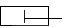
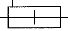
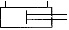
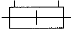
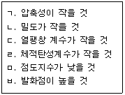
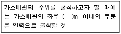

굴삭기운전기능사 (2005-10-02 기출문제)
1. 4행정 기관에서 크랭크축 기어와 캠 축 기어와의 지름의 비 및 회전비는 각각 얼마인가?
- 2:1 및 1:2
- 2:1 및 2:1
- 1:2 및 2:1
- 1:2 및 1:2
(정답률: 68%)

2. 디젤 기관에서 시동을 돕기 위해 설치된 부품으로 적당한 것은?
- 과급 장치
- 발전기
- 디퓨저
- 히트 레인지
(정답률: 64%)
3. 엔진의 윤활유 소비량이 과대해지는 가장 큰 원인은?
- 기관의 과열
- 피스톤 링 마멸
- 오일 여과기 불량
- 냉각펌프 손상
(정답률: 68%)
4. 회전력의 단위로 맞는 것은?
- kgf-m
- kgf/㎠
- kgf
- m/kgf
(정답률: 35%)
5. 작업 중 엔진 온도가 급상승하였을 때 먼저 점검하여야 할 것은?
- 윤활유 수준 점검
- 과부하 작업
- 장기간 작업
- 냉각수의 양 점검
(정답률: 87%)
6. 엔진 오일의 교환시기와 주유할 때의 요령이다. 틀린 것은
- 엔진에 알맞은 오일을 선택한다.
- 주유할 때 사용지침서 및 주유표에 의한다.
- 오일교환 시기를 맞춘다.
- 재생오일을 사용한다.
(정답률: 92%)
7. 디젤기관에서 시동이 잘 안 되는 원인으로 맞는 것은?
- 연료계통에 공기가 차 있을 때
- 냉각수를 경수로 사용할 때
- 스파크 플러그의 불꽃이 약할 때
- 클러치가 과다 마모되었을 때
(정답률: 65%)
8. 배기관이 불량하여 배압이 높을 때 기관에 생기는 현상 중 틀린 것은?
- 기관이 과열된다.
- 냉각수 온도가 내려간다.
- 기관의 출력이 감소된다.
- 피스톤의 운동을 방해한다.
(정답률: 73%)
9. 팬벨트에 대한 점검과정이다. 틀린 것은?
- 팬벨트는 눌러(약 10kgf) 13～20mm 정도로 한다.
- 팬벨트는 풀리의 밑 부분에 접촉되어야 한다.
- 팬벨트 조정은 발전기를 움직이면서 조정한다.
- 팬벨트가 너무 헐거우면 기관 과열의 원인이 된다.
(정답률: 48%)
10. 노킹이 발생되었을 때 기관에 미치는 영향이 아닌 것은?
- 기관 회전수가 높아진다.
- 엔진이 과열된다.
- 흡기효율이 저하된다.
- 출력이 저하된다.
(정답률: 70%)
11. 분사펌프의 플런저와 배럴 사의의 윤활은?
- 유압유
- 경유
- 그리스
- 기관 오일
(정답률: 51%)
12. 다음 중 교류 발전기의 부품이 아닌 것은?
- 다이오드
- 슬립링
- 스테이터 코일
- 전류 조정기
(정답률: 35%)
13. 6기통 디젤기관에서 병렬로 연결된 예열(Grow)플러그가 있다. 3번 기통의 예열 플러그가 단락되면 어떤 현상이 발생되는가?
- 전체가 작동이 안 된다.
- 3번 실린더만 작동이 안 된다.
- 3번 옆에 있는 2번과 4번도 작동이 안 된다.
- 축전지 용량의 배가 방전된다.
(정답률: 71%)
14. 고장 진단 및 테스트용 출력 단자를 갖추고 있으며, 항상 시스템을 감시하고, 필요하면 운전자에게 경고 신호를 보내주는 기능에 해당되는 것은?
- 제어 유닛
- 피드백
- 주파수 신호처리
- 자기진단
(정답률: 48%)
15. 축전지가 과충전일 경우 발생되는 현상으로 틀린 것은?
- 전해액이 갈색을 띠고 있다.
- 양극판 격자가 산화된다.
- 양극 단자 쪽의 셀 커버가 볼록하게 부풀어 있다.
- 축전지에 지나치게 많은 물이 생성된다.
(정답률: 59%)
16. 발전기는 어떤 축에 의해 구동되는가?
- 크랭크축
- 캠 축
- 추진축
- 변속기 입력축
(정답률: 66%)
17. 전해액의 온도가 내려가면 비중은?
- 내려간다.
- 올라간다.
- 변함 없다.
- 보충이 요구된다.
(정답률: 67%)
18. 굴삭기의 스프로켓에 가까운 쪽의 롤러는 어떤 형식을 사용하는가?
- 싱글 플랜지형
- 더블 플랜지형
- 플랫형
- 오프셋형
(정답률: 43%)
19. 유압식 브레이크 장치에서 제동이 풀리지 않는 원인은?
- 브레이크 오일의 점도가 낮기 때문
- 파이프 내의 공기 침입
- 첵밸브의 접촉 불량
- 마스터 실린더의 리턴 구멍 막힘
(정답률: 50%)
20. 기중기 작업 전 점검사항이 아닌 것은?
- 작업반경 내에 장애물은 없는가
- 급유는 골고루 되어 있는가
- 전원 스위치는 잘 차단되어 있는가
- 운전실 조정 레버, 스위치류는 정 위치에 있는가
(정답률: 55%)
21. 이산화탄소 소화기의 일반적인 특징이 아닌 것은?
- 연소물의 온도를 인화점 이하로 냉각시킨다.
- 전기 절연성이 크다.
- 저장에 따른 변질이 없다.
- 소화시 부식성이 없다.
(정답률: 32%)
22. 장비의 위치보다 높은 곳을 굴착하는데 알맞은 것으로 토사 및 암석을 트럭에 적재하기 쉽게 디퍼덮개를 개폐하도록 제작된 장비는?
- 파워 셔블
- 기중기
- 굴삭기
- 스크레이퍼
(정답률: 54%)
23. 클러치의 압력 판은 무슨 역할을 하는가?
- 클러치판을 밀어서 플라이휠에 압착시키는 역할을 한다.
- 동력 차단을 용이하게 한다.
- 릴리스 베어링의 회전을 용이하게 한다.
- 엔진의 동력을 받아 속도를 조절한다.
(정답률: 70%)
24. 지게차 조향 바퀴의 얼라인먼트의 요소가 아닌 것은?
- 캠버(CAMBER)
- 토인(TOE IN)
- 캐스터(CASTER)
- 부스터(BOOSTER)
(정답률: 70%)
25. 지게차의 하역 방법 설명으로 가장 적절하지 못한 것은?
- 짐을 내릴 때는 마스트를 앞으로 약 4°정도 경사 시킨다.
- 짐을 내릴 때는 틸트 레버 조작은 필요 없다.
- 짐을 내릴 때는 가속페달의 사용은 필요 없다.
- 리프트 레버를 사용할 때 시선은 포크를 주시한다.
(정답률: 65%)
26. 타이어식 로더에 차동기 고정장치가 있을 때의 장점은?
- 충격이 완화된다.
- 조향이 원활해진다.
- 연약한 지반에서 작업이 유리하다.
- 변속이 용이해 진다.
(정답률: 48%)
27. 다음 건설기계 중 도로교통법에 의한 1종 대형면허로 조종할 수 없는 것은?
- 아스팔트 살포기
- 노상 안정기
- 트럭 적재식 천공기
- 골재 살포기
(정답률: 34%)
28. 최고속도의 100분의 50을 줄인 속도로 운행하여야 할 경우가 아닌 것은?
- 눈이 20mm이상 쌓인 때
- 비가 내려 노면에 습기가 있을 때
- 노면이 얼어붙은 때
- 폭우, 폭설, 안개 등으로 가시거리가 100m이내 인 때
(정답률: 75%)
29. 도로교통법 상 안전표지의 종류가 아닌 것은?
- 주의표지
- 규제표지
- 안심표지
- 보조표지
(정답률: 73%)
30. 신호등이 없는 철길건널목 통과 방법 중 맞는 것은?
- 차단기가 올라가 있으면 그대로 통과해도 된다.
- 반드시 일시 정지한 후 안전을 확인하고 통과한다.
- 경보등이 켜져 있으면 일시정지하지 않아도 된다.
- 일시정지하지 않아도 좌우를 살피면서 서행으로 통과하면 된다.
(정답률: 85%)
31. 총중량 2000kg 미달인 자동차를 그의 3배 이상의 총중량 자동차로 견인할 때의 속도는?
- 시속 15km이내
- 시동 20km이내
- 시속 30km이내
- 시속 40km이내
(정답률: 62%)
32. 건설기계등록을 말소한때에는 등록번호표를 몇 일 이내에 시?도지사에게 반납하여야 하는가?
- 10일
- 15일
- 20일
- 30일
(정답률: 52%)
33. 지게차의 정기검사 유효 기간은?
- 6월
- 1년
- 2년
- 3년
(정답률: 50%)
34. 제한 외의 적재 및 승차 허가를 할 수 있는 관청은?
- 관할 시?군청
- 출발지를 관할하는 경찰서
- 출발지를 관할하는 경찰청
- 시?읍?면사무소
(정답률: 45%)
35. 기액식 어큐뮬레이터에 사용되는 가스는?
- 산소
- 질소
- 아세틸렌
- 이산화탄소
(정답률: 59%)
36. 방향제어밸브를 동작시키는 방식이 아닌 것은?
- 수동식
- 전자?유압 파일럿식
- 전자식
- 스프링식
(정답률: 52%)
37. 다음은 유압장치의 장점을 기술하였다. 틀린 것은?
- 소형장치로 큰 출력을 발생한다.
- 무단변속이 가능하고 정확한 위치제어를 할 수 있다.
- 유온의 영향이 있어도 정밀한 속도와 제어가 가능하다.
- 과부하에 대한 안전장치가 간단하고 정확하다.
(정답률: 34%)
38. 복동 실린더 양 로드형을 나타내는 유압 기호는?




(정답률: 56%)
39. 기어펌프의 특징이 아닌 것은?
- 외접식과 내접식이 있다.
- 베인펌프에 비해 소음이 비교적 크다.
- 펌프의 발생 압력이 가장 높다.
- 구조가 간단하고 흡입성이 우수하다.
(정답률: 37%)
40. 유압 장치의 과부하 방지와 유압기기의 보호를 위하여 최고 압력을 규제하고 유압 회로 내의 필요한 압력을 유지하는 밸브는?
- 압력제어 밸브
- 유량제어 밸브
- 방향제어 밸브
- 온도제어 밸브
(정답률: 78%)
41. 유압장치에서 고 소용량, 저압 대용량 펌프를 조합 운전할 때, 작동 압력이 규정 압력 이상으로 상승할 때 동력 절감을 하기 위해 사용하는 밸브는?
- 감압밸브
- 릴리프 밸브
- 시퀸스 밸브
- 무부하 밸브
(정답률: 33%)
42. 고압 대출력에 사용하는 유압 모터로 가장 적절한 것은?
- 기어 모터
- 베인 모터
- 트로코이드 모터
- 피스톤 모터
(정답률: 61%)
43. 다음에서 유압 작동유가 갖추어야 할 조건으로 맞는 것은?

- ㄱ,ㄴ,ㄷ,ㄹ
- ㄴ,ㄷ,ㅁ,ㅂ
- ㄴ,ㄹ,ㄷ,ㅂ
- ㄱ,ㄴ,ㄷ,ㅂ
(정답률: 33%)
44. 유압회로의 압력을 점검하는 위치로 가장 적당한 것은?
- 유압 오일탱크에서 유압펌프 사이
- 유압펌프에서 컨트롤 밸브 사이
- 실린더에서 유압 오일탱크 사이
- 유압 오일탱크에서 직접 점검
(정답률: 51%)
45. 유압회로 내에서 서지압(surge pressure)이란?
- 과도적으로 발생하는 이상 압력의 최대 값
- 정상적으로 발생하는 압력의 최대 값
- 정상적으로 발생하는 압력의 최소 값
- 과도적으로 발생하는 이상 압력의 최소 값
(정답률: 60%)
46. 유압장치의 일상 점검 개소가 아닌 것은?
- 오일의 양
- 오일의 색
- 오일의 온도
- 탱크 내부
(정답률: 76%)
47. 이미 소화하기 힘든 정도로 화재가 진행된 화재 현장에서 제일 먼저 하여야 할 조치로 가장 올바른 것은?
- 소화기 사용
- 화재 신고
- 인명 구조
- 분말 소화기 사용
(정답률: 64%)
48. 산업 공장에서 재해의 발생을 적게 하기 위한 방법 중 틀린 것은?
- 폐기물은 정해진 위치에 모아둔다.
- 공구는 소정의 장소에 보관한다.
- 소화기 근처에 물건을 적재한다.
- 통로나 창문 등에 물건을 세워 놓아서는 안 된다.
(정답률: 83%)
49. 스패너를 사용할 때 올바른 것은?
- 스패너 입이 너트의 치수보다 큰 것을 사용해야 한다.
- 스패너를 해머로 사용한다.
- 너트를 스패너에 깊이 물리고 조금씩 앞으로 당기는 식으로 풀고 조인다.
- 너트에 스패너를 깊이 물리고 조금씩 밀면서 풀고 조인다.
(정답률: 75%)
50. 운반 작업을 할 때 틀린 것은?
- 드럼통과 봄베는 굴려서 운반한다.
- 공동 운반에서는 서로 협조하여 작업한다.
- 긴 물건은 앞쪽을 위로 올린다.
- 무리한 몸가짐으로 물건을 들지 않는다.
(정답률: 70%)
51. 볼트나 너트를 조이고 풀 때 사항으로 틀린 것은?
- 볼트와 너트는 규정 토크로 조인다.
- 규정 토크를 2～3회 나누어 조인다.
- 토크렌치를 사용한다.
- 규정 이상의 토크로 조이면 나사부가 손상된다.
(정답률: 54%)
52. 다음 중 장비로 교량을 주행할 때 안전 사항으로 가장 거리가 먼 것은?
- 신속히 통과한다.
- 장비의 무게 및 중량을 고려한다.
- 교량의 폭을 확인한다.
- 교량의 통과 하중을 고려한다.
(정답률: 86%)
53. 운전자는 작업 전에 장비의 정비 상태를 확인하고 점검하여야 하는데 가장 거리가 먼 것은?
- 타이어 및 궤도 차륜 상태
- 브레이크 및 클러치의 작동 상태
- 낙석, 낙하물 등의 위험이 예상되는 작업시 견고한 헤드 가이드 설치상태
- 엔진의 진공도 상태
(정답률: 63%)
54. 동력 전달장치 중 재해가 가장 많이 일어날 수 있는 것은?
- 기어
- 차축
- 벨트
- 커플링
(정답률: 78%)
55. 수공구 정리정돈에 대하여 옳지 않은 방법은?
- 공구는 지정된 곳에 보관한다.
- 공구는 온도와 습도가 높은 곳에 둔다.
- 공구는 기계나 재료 등의 위에 올려놓지 않는다.
- 공구는 잘 정리하여 종류와 수량을 정확히 파악해 둔다.
(정답률: 87%)
56. 건설기계 운전자가 운전위치를 이탈할 때 안전측면에서 조치사항으로 가장 거리가 먼 것은?
- 일시 작업을 멈춘다.
- 원동기를 정지시킨다.
- 브레이크를 확실히 건다.
- 작업장치를 올리고 버팀목을 받친다.
(정답률: 73%)
57. 전기는 전압이 높을수록 위험한데 가공전선로의 위험 정도를 판별하는 방법으로 가장 올바른 것은?
- 전선을 굵기
- 지지물의 높이
- 애자의 개수
- 지지물과 지지물의 간격
(정답률: 60%)
58. 굴착으로부터 전력 케이블을 보호하기 위하여 시설하는 것이 아닌 것은?
- 표지시트
- 지중 선로 표시기
- 모래
- 보호 판
(정답률: 68%)
59. 다음 ( )안에 알맞은 것은?

- 1
- 2
- 3
- 5
(정답률: 57%)
60. 도시 가스인 천연가스가 배관을 통하여 공급되는 압력이 5kgf/㎠이다. 이 압력은 도시 가스 사업법 상 어느 압력에 해당되는가?
- 고압
- 중압
- 중간압
- 저압
(정답률: 39%)
크랭크축 기어와 캠 축 기어는 서로 다른 역할을 수행합니다. 크랭크축 기어는 엔진의 동력을 전달하여 차량을 움직이게 하고, 캠 축 기어는 밸브의 개폐를 조절하여 연소 과정을 제어합니다.
따라서, 크랭크축 기어는 회전 속도를 높이기 위해 큰 지름의 기어를 사용하고, 캠 축 기어는 회전력을 강화하기 위해 작은 지름의 기어를 사용합니다. 이에 따라, 크랭크축 기어의 지름과 캠 축 기어의 지름은 1:2 비율로 설계되며, 회전비는 캠 축 기어가 크랭크축 기어보다 2배 빠르게 회전하도록 설계됩니다.